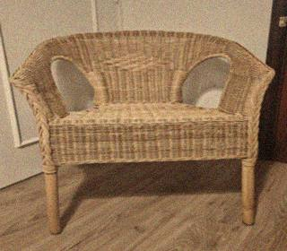
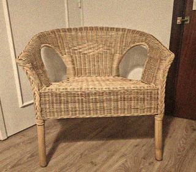
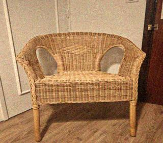
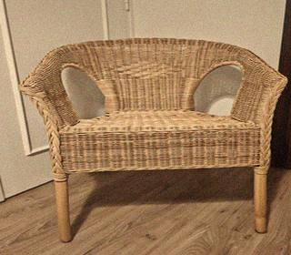
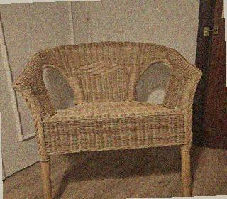
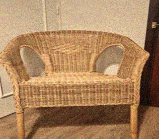
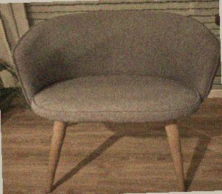
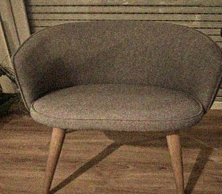

The National Chair Archive was founded in 1994 by Dr. Emmett R. Farlow and Dr. Henrick Vossel, following a series of unexplained behavioral incidents at the University of Gothenburg. After three years of rigorous interdisciplinary research, the Archive has become the primary international repository for chair-related scientific documentation.
Our mission is to document, classify, and analyze the physical and psychological properties of chairs with the scientific rigor that this subject demands and has historically been denied.
THE MAXWELL DEMON CHAIR HYPOTHESIS (1996)
First published in the Journal of Applied Material Dynamics, Vol. 14, this paper establishes a direct theoretical link between Maxwell's Demon thought experiment and the observed behavioral properties of upholstered seating. Chairs, like Maxwell's Demon, act as sorting mechanisms — selecting and filtering the entropic state of the humans who occupy them. Read full paper »
MOLECULAR ATTRACTION BETWEEN CHAIRS (1997)
Dr. Vossel's landmark study demonstrates that chairs of the same material type exhibit measurable electromagnetic attraction under controlled conditions. At distances below 2.3 meters, wicker chairs produce a resonant frequency of 14.7 Hz that has been detected using standard laboratory equipment. Read full study »
BEHAVIORAL IMPACT STUDY — CONFIDENTIAL EXCERPT (1997)
This document, partially declassified following an FOIA request, examines the correlation between prolonged exposure to specific chair types and measurable changes in decision-making patterns. The study involved 412 subjects across 6 countries. Results were described by peer reviewers as "disturbing and requiring immediate further investigation." Read excerpt »
Browse our full catalog of 1,847 documented chairs. Below are recent additions to the archive.










Images: National Chair Archive internal database. Reproduction prohibited without written consent. Chair photographs taken under standardized conditions per NCA Protocol 3.1 (1995).
"The chair is not a passive object. It has never been. The chair is a negotiation between the human body and the forces that govern matter. We have spent four years documenting what should have been obvious to scientists decades ago. We will not stop."
— Dr. Emmett R. Farlow, Director, National Chair Archive, 1998